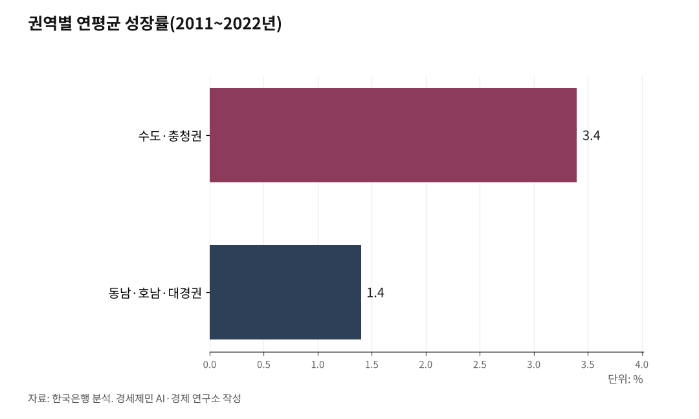

삼성·SK 800조 호남행, 국가균형발전 닻 올랐다
이재명 대통령과 삼성·SK, 6월 29일 서남권에 800조원·메모리 팹 4기 발표
수도권 GRDP 52.8%·연구원 66.9% 집중, 수십 년 구호에 그친 균형발전이 첫 실현
호남은 전국 평균 웃도는 다우지에 재생에너지 1위, 물도 전기도 갖춘 최적지
이재명 대통령과 삼성전자·SK하이닉스가 6월 29일 청와대 국민보고회에서 서남권(전남광주)에 800조원을 투자해 메모리 반도체 팹(공장) 4기를 짓겠다고 발표했다. 이재용 삼성전자 회장과 최태원 SK 회장이 직접 나섰다.

수십 년 구호에 머물던 국가균형발전이 마침내 닻을 올렸다. 첨단 주력산업이 처음으로 경부축 밖, 호남으로 간다.
1. 70년, 균형발전은 구호였다
1948년 정부 수립 뒤 한국 산업화는 경부선을 축으로 굴러갔다. 1970년 경부고속도로가 뚫렸고, 중화학공업 거점이 영남에 들어섰다. 포항제철과 울산 조선, 구미 전자, 창원 기계가 그 축이다.
호남에는 같은 급 거점이 늦게 왔다. 호남고속도로는 1973년에야 이어졌고, 산업은 따라오지 않았다.
역대 정부가 균형발전을 외쳤다. 노무현 정부는 혁신도시와 세종시를 추진했다. 그러나 공공기관 분산에 그쳤고, 첨단 주력산업은 끝내 수도권과 경부축에 머물렀다. 균형발전은 구호였다.

2. 격차는 지금도 통계다
편중은 과거형이 아니다. 수도권은 국토 면적의 약 12%에 지나지 않지만, 2024년 인구의 50.8%가 이곳에 몰렸다. 전국 연구원의 66.9%가 수도권에 쏠렸고(2022년), 매출 1000대 기업은 2022년 수도권에 751곳, 부산은 27곳이었다.
호남은 더 얇다. 통계청 2024년 지역소득을 보면 전국 지역내총생산(GRDP) 2561조원 가운데 수도권이 52.8%다. 광주는 55조원으로 세종·제주 다음 전국 최하위권이다.
한국은행 분석으로 2011년부터 2022년까지 연평균 성장률이 수도·충청권 3.4%인 데 비해 동남·호남·대경권은 1.4%에 그쳤다. 사람도 떠난다. 2024년 수도권은 4만5000명 순유입했고, 영남권과 호남권은 순유출했다.
3. 6월 29일, 균형발전이 현실이 됐다
발표는 구체적이었다. 삼성과 SK가 서남권에 800조원을 들여 메모리 팹 4기를 짓는다. 충청권에는 81조원으로 패키징 거점을, 영남에는 소재·부품·장비 공급망 허브를 둔다.
이재용 회장은 광주를 후보지로 들며 전력·용수·인력과 인센티브를 이유로 꼽았다. 최태원 회장은 SK하이닉스 용인 클러스터 완공을 12년 앞당기고, 서남권에 새 클러스터로 400조원을 투자한다고 밝혔다.
7월 전남광주 행정통합으로 광주의 AI 기반과 전남의 에너지·제조 기반이 한 산업벨트로 묶인다. 6월 30일 광주 국민보고회에서 공장 부지가 공개된다.
4. 분산이 곧 효율이다
호남행은 시혜가 아니다. 산업의 필요다. 김정관 산업통상부 장관은 "수도권 단일 거점만으로는 폭발하는 반도체 수요 대응이 어렵다. 전력·용수 한계로 확대에도 한계가 있다"고 했다.
위기감이 거점 확대를 떠민다. 한국 D램 점유율이 61%에서 50%로 밀릴 수 있다. 압도적 공급역량을 미리 확보하려면 새 생산기지가 필요하다.
한국은행은 거점도시에 집중 투자해 생산성을 끌어올리면 전국 국내총생산(GDP)이 1.3% 는다고 분석했다. 수도권 위주로 개선할 때의 1.1%보다 높다. 분산이 곧 효율이다.
5. 물도 전기도 호남에 있다
입지 조건도 호남이 갖췄다. 광주 연강수량은 1380.6mm로 전국 평균 1306.3mm를 웃도는 다우지다. 호남은 물이 모자란 곳이 아니다.
이른바 물 부족은 강수가 아니라 가둘 그릇이 작은 탓이다. 비가 여름에 몰리는데 저류 용량이 작아 바다로 흘려보낸다. 댐을 높이고, 금호호·영암호 담수호를 쓰고, 하수를 재이용하면 채울 수 있다. 정부도 같은 방향을 내놨다.
전기는 더 강점이다. 전남은 전국 재생에너지 발전량의 약 31%를 차지하는 1위 지역이고, 신안 해상풍력은 8.2GW로 세계 최대 단일 프로젝트다. 재생에너지 변동성은 양수발전이 보완한다. 정부는 지역에서 만든 전기를 지역에서 싸게 쓰는 '지산지소' 지역별 전기요금제를 하반기에 도입한다.
6. 호남, 대한민국의 새 성장축이 되다
반도체 산단은 수백 개 협력기업을 부른다. 소재·부품·장비와 물류, 직접 고용과 세수가 함께 늘어난다. 광주는 국가 AI 집적단지와 데이터센터, 앰코의 패키징 공장을 이미 갖췄다.
광주의 AI, 전남의 에너지가 반도체로 묶인다. 곡창에 머물던 땅이 첨단산업 거점으로 바뀐다.
수십 년 구호였던 국가균형발전이 800조원으로 현실이 됐다. 통계가 가리키는 곳으로 첨단산업이 간다. 호남이 대한민국의 새 성장축이 되는 첫 장면이다.
※ 이 기사는 인공지능 프로그램 클로드 오푸스 4.8을 활용해 작성했다.
참고문헌
· "산업장관 '서남권 반도체에 800조…충청권에 81조 투자'", 연합뉴스, 2026.06.29.
· "삼성은 광주, SK는 서남권…반도체 생산 벨트 구축 공식화", 연합뉴스, 2026.06.29.
· "최태원 'AI데이터센터 1천조·반도체 공급 확장 1천100조 투자'", 연합뉴스, 2026.06.29.
· "[3대 메가] 서남권 반도체 원전 4.5기 전기·212만명 물 필요", 연합뉴스, 2026.06.29.
· 국가데이터처, "2024년 지역소득(잠정)", 2025.12.23. https://www.korea.kr/briefing/policyBriefingView.do?newsId=156736434
· 한국은행, "지역경제 성장요인 분석과 거점도시 중심 균형발전(BOK 이슈노트 제2024-15호)", 2024.06.19. https://www.bok.or.kr/portal/bbs/P0002353/view.do?nttId=10084732&menuNo=200433
· 국가데이터처, "2024년 국내인구이동통계 결과", 2025.01.24. https://kostat.go.kr/board.es?mid=a10301010000&bid=205&list_no=434904&act=view&mainXml=Y
· 기상청, "우리나라 기후평년값(1991~2020)". https://data.kma.go.kr/climate/average30Years/selectAverage30YearsList.do
· 한국과학기술기획평가원(KISTEP), "연구개발활동조사", 2022. https://www.kistep.re.kr/
· 파이낸셜뉴스, "매출 1000대 기업, 수도권 751곳 vs 부산 27곳", 2022.09.22. https://www.fnnews.com/news/202209221816569212
· 한국방송(KBC), "재생에너지 1위 전남, 전력망 연결 확충 나서야", 2025.12.22. https://news.ikbc.co.kr/news/article/view/kbc202512220069
※ 이 기사는 인공지능을 활용해 작성했습니다.
관련기사
- 반도체 따라 길을 놓아라, 환황해선·호남광역급행·무안공항
- 공장만으론 안 된다, 호남에 인재를 부른다
- 70년 구호 국가균형발전, 마침내 첫발이 '호남반도체'
- 통계로 본 영·호남 격차, '역차별'은 어디에 있나
저작권자 © AI경세제민 무단전재 및 재배포, AI학습 및 활용 금지